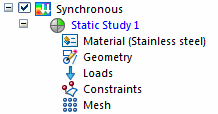
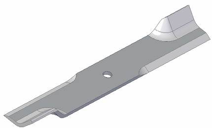
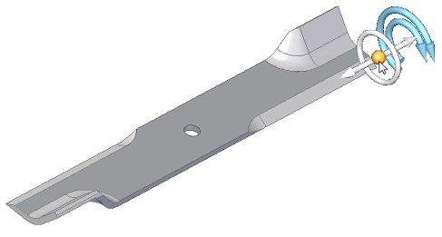
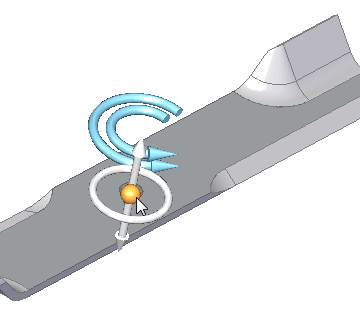
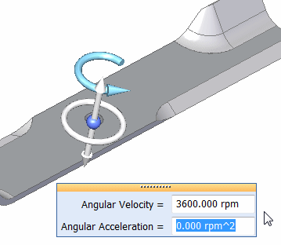
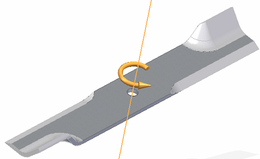
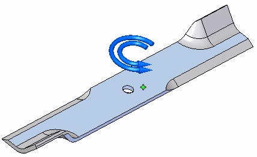
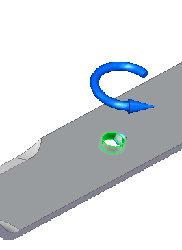
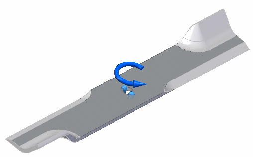
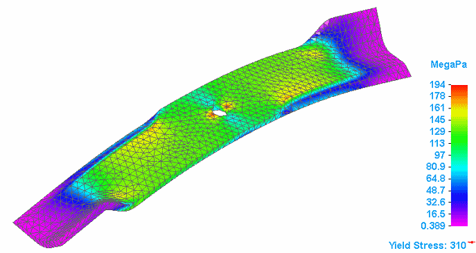

Tutorial: Simulate centrifugal forces on a mower blade
Use linear static analysis to simulate a lawn mower blade at its top speed, at a steady-state condition.
The study parameters used in this tutorial are:
-
Structural Study type=Linear Static
-
Load type=Centrifugal
-
Constraint type=Fixed
-
Mesh type=Tetrahedral
-
Open the file named FE_blade.par.
Simulation models are delivered in the \Program Files\Siemens\Solid Edge 2023\Training\Simulation folder.
In the Simulation pane, notice that a linear static study was already created for this model.


-
Define a centrifugal load.
-
Select Simulation tab→Body Loads group→Centrifugal .
-
Select the origin knob of the steering wheel and drag the steering wheel to align it with the axis of the mounting hole. When the inner face of the mounting hole highlights, release the mouse button.

The direction of the centrifugal load arrows should match the direction shown in the following illustration. If necessary, you can use the Flip Angular Velocity button and the Flip Angular Acceleration button on the command bar to reverse their directions.

Note:See Orient the steering wheel to learn more.
-
Type the following values:
In the Angular Velocity box, type 3600 rpm.
In the Angular Acceleration box, type 0 rpm ^2.

-
Press Enter. Click to finish.

Note:If you define an angular acceleration, the finished load symbol displays both arrows.

-
-
Add a fixed constraint.
-
Select Simulation tab→Constraints group→Fixed.
-
Select the mounting hole cylindrical face.

-
Right-click to accept, and click to finish.

-
-
Mesh and solve the study.
-
In the Simulation pane, turn off loads and constraints by clearing their respective check boxes.
-
Select Mesh. Choose Mesh & Solve.
-
After a few moments, the part is meshed and solved.

-
-
Close this file.